Sobre o NERD LAB do PAV
O Polo Arqueológico de Viseu (PAV) é o centro operacional da Câmara Municipal de Viseu para a Arqueologia. Agrega os recursos dedicados a esta área e promove o interesse sobre o património arqueológico enquanto objeto de investigação e elemento de fruição cultural.
O NERD (opeN heritagE Research & Development) LAB é o programa do PAV dedicado ao desenvolvimento e criação de estratégias de utilização das tecnologias digitais ao serviço da Arqueologia. O programa desenvolve várias iniciativas que conjugam património arqueológico e histórico de Viseu com tecnologias digitais, promovendo a construção colaborativa de contributos que ampliem e diversifiquem o conhecimento sobre este património.
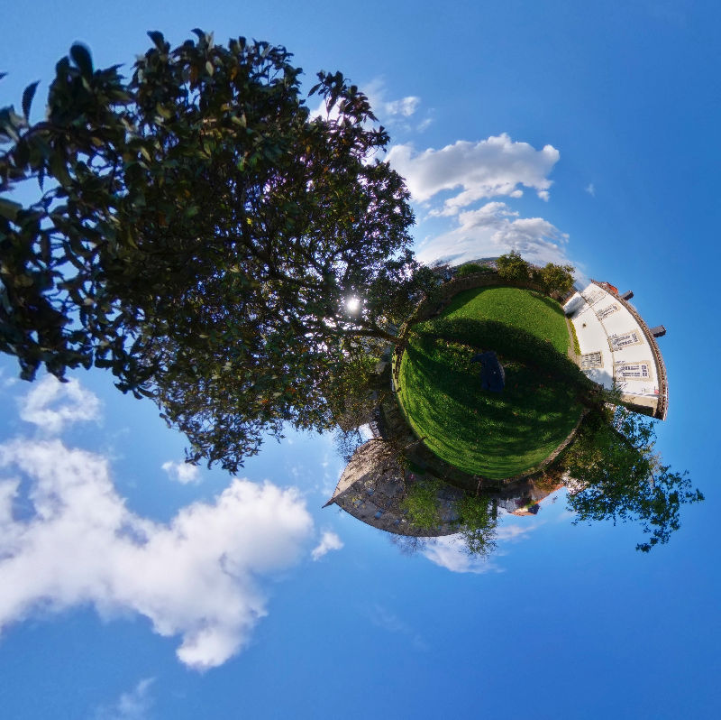
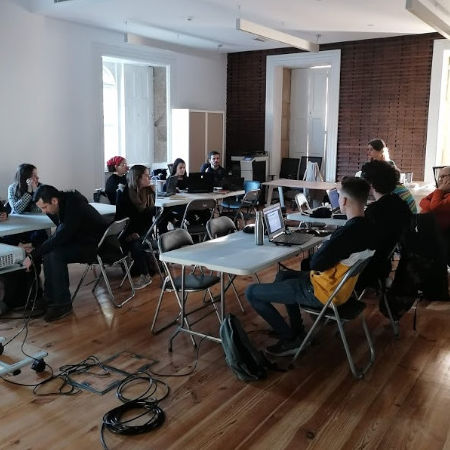
Comunidade
Promover o envolvimento e a participação cultural e cívica na descoberta, valorização e salvaguarda do património arqueológico e da história local.
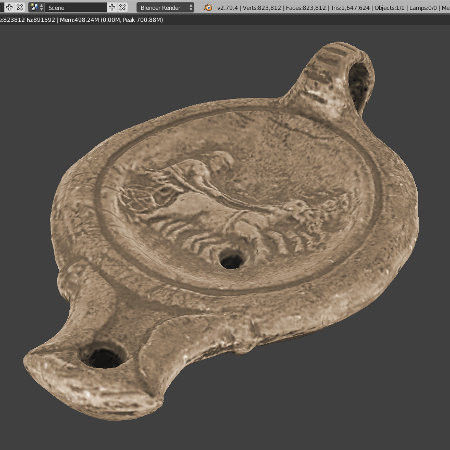
Tecnologias
Utilizar tecnologias digitais ao serviço do registo, documentação, comunicação, promoção e valorização do património arqueológico de Viseu.
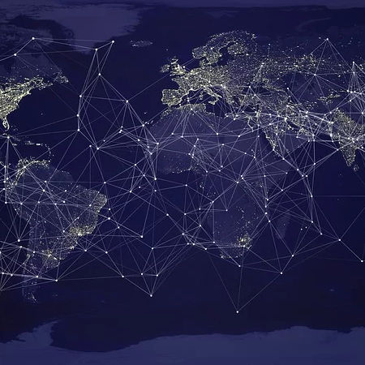
Transparência
Implementar estratégias de Open Data, Open Access e Open Source para facilitar o acesso, a reutilização e a colaboração com especialistas e público em geral.
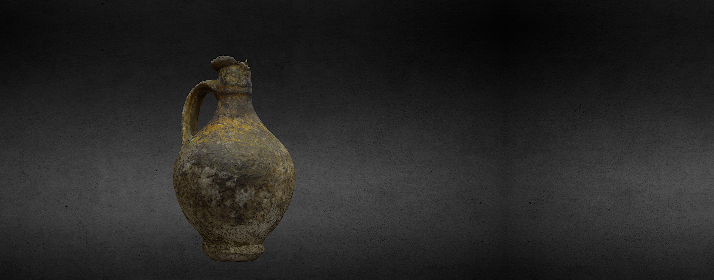
A comunidade e rede
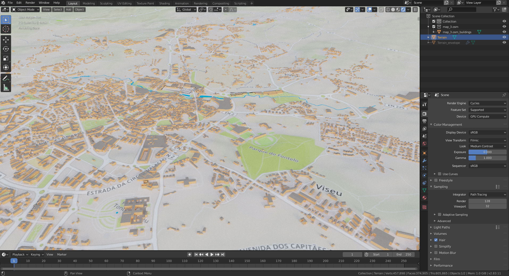
As Oficinas de formação para 2020
Introdução à fotogrametria
7 mar
Imagem 3D: introdução ao Blender
4 abr
Web mapping
6 jun
Software Livre e Open Source para Arqueologia
1 ago
Imagem 2D: gestão, análise e armazenamento
10 out
Edição de vídeo
12 dez
Se procura informações mais detalhadas, descarregue o Plano de Formação
ALTERAÇÕES EM CURSO
LOCAL
Polo Arqueológico de Viseu, Casa do Miradouro.
HORÁRIO
10h00-13h00 / 14h00-17h00 (6h)
PÚBLICO
> de 16 anos
VAGAS
15 participantes por sessão.
VALOR DE PARTICIPAÇÃO
10€/sessão
DESCONTOS
20% na inscrição em três sessões, 50% na inscrição em seis sessões.
ISENÇÕES
Alunos do Ensino Superior e Secundário de Viseu (com apresentação de comprovativo).
ATENÇÃO
Pandemia da COVID-19
Na sequência da pandemia da COVID-19, foram suspensas as oficinas de formação em regime presencial, programadas até 31 de maio. Estamos a preparar um plano alternativo para formação à distância.
Novidades em breve!
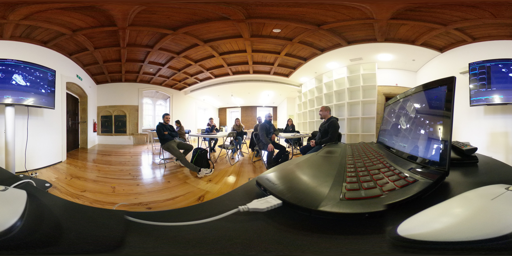
Os encontros do NERDLAB
Os encontros do NERDLAB são espaços de participação abertos à comunidade e acontecem no último sábado de cada mês, a partir das 14h, na Casa do Miradouro.
E estão tod@s convidad@s!
Num espaço informal de trabalho, trocamos conhecimentos e experiências, apresentamos e colaboramos em projetos, aprendemos sobre Arqueologia, Património e Tecnologias Digitais. Ou seja, construimos algo juntos.
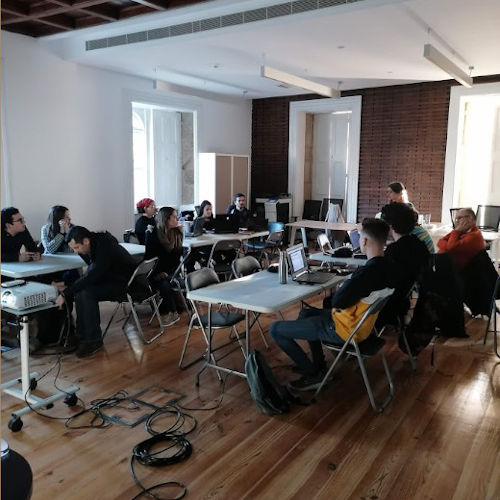
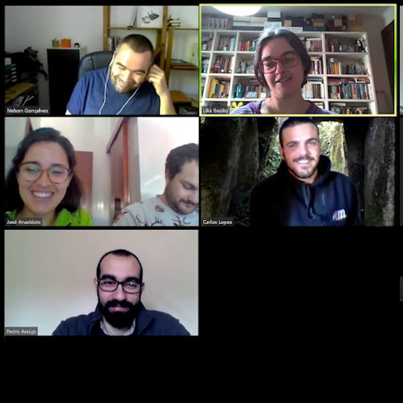
ATENÇÃO
Pandemia da COVID-19
Na sequência da pandemia da COVID-19, foram suspensas os encontros presenciais e iniciámos os encontros NERD LAB por videoconferência, no último sábado de cada mês. Continuamos a estar juntos e a aprendizagem e os projetos avançam!
Instala a aplicação Zoom e prepara a webcam!
Para mais informações...

Projetos
Catálogo do que andamos a fazer :)
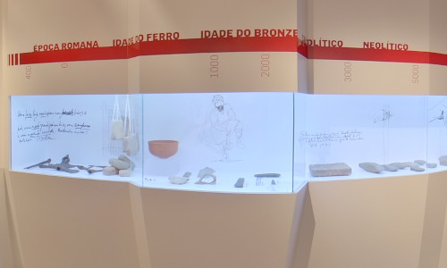
José Coelho: a paixão pelo passado 360º
José Coelho: a paixão pelo passado 360º
Visita virtual à exposição "José Coelho: a paixão pelo passado", patente na Casa do Miradouro. A visita virtual inclui novos conteúdos, em formatos e para públicos diversos, que enriqueçem e complementam a experiência da visita in loco.
EQUIPA Nelson Gonçalves, Lília Basílio.
ANO 2020
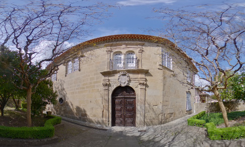
Casa do Miradouro 360º
Casa do Miradouro 360º
Um passeio virtual pela Casa do Miradouro, sede do Polo Arqueológico de Viseu. A visita inclui informação sobre a história, características e curiosidades deste edifício fundado o século XVI.
EQUIPA Nelson Gonçalves, Lília Basílio,Joana Campos.
ANO 2020
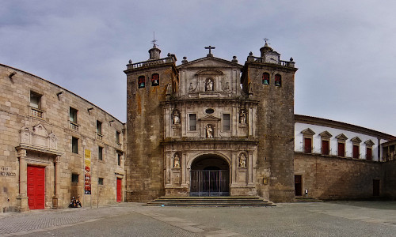
José Coelho pela cidade 360º
José Coelho pela cidade 360º
Virtualização do roteiro "José Coelho pela cidade". Este roteiro faz um percurso por Viseu, revisitando histórias das disputas de José Coelho pela investigação, divulgação e defesa do património da cidade.
EQUIPA Nelson Gonçalves, Lília Basílio.
ANO 2020
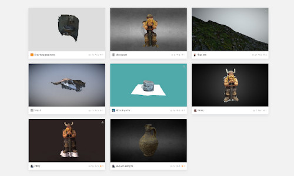
Galeria 3D do PAV
Galeria 3D do PAV
Galeria virtual de modelos 3D do património arqueológico do concelho, incluindo objetos em Reserva e Acervo, criados através de diferentes tecnicas de modelação, para fins educativos, de documentação, investigação.
EQUIPA Nelson Gonçalves, Catarina Cabral, Carlos Lopes.
ANO 2020
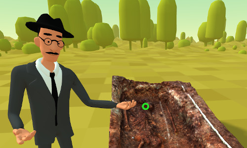
Mamaltar VR
Mamaltar VR
Modelação do monumento megalítico Mamaltar de Vale da Fachas para experiencia de realidade virtual via web. Inclui visualização de objetos e informação sobre a escavação de 1911 realizada por José Coelho.
EQUIPA Nelson Gonçalves, Carlos Lopes.
ANO 2020
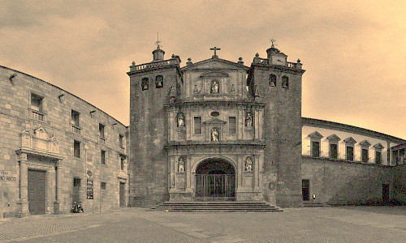
Vizeu 360º
Vizeu 360º
Visita virtual 360º a alguns locais emblemáticos da cidade que combina perspetivas atuais com imagens antigas.
EQUIPA Nelson Gonçalves, Pedro Araújo.
ANO 2020

Os nossos contactos...
A equipa do NERD LAB pode ser contactada de várias formas. Envia um email e prometemos que será mesmo lido por uma pessoa que responderá logo que possível ;)
Para além dos endereços de contacto, estamos presentes em várias redes online.
Polo Arqueológico de Viseu
Casa do Miradouro
Largo António José Pereira
Viseu 3500-080 Portugal
Telefone 232 425 388
Email casadomiradouro[AT]cmviseu[DOT]pt